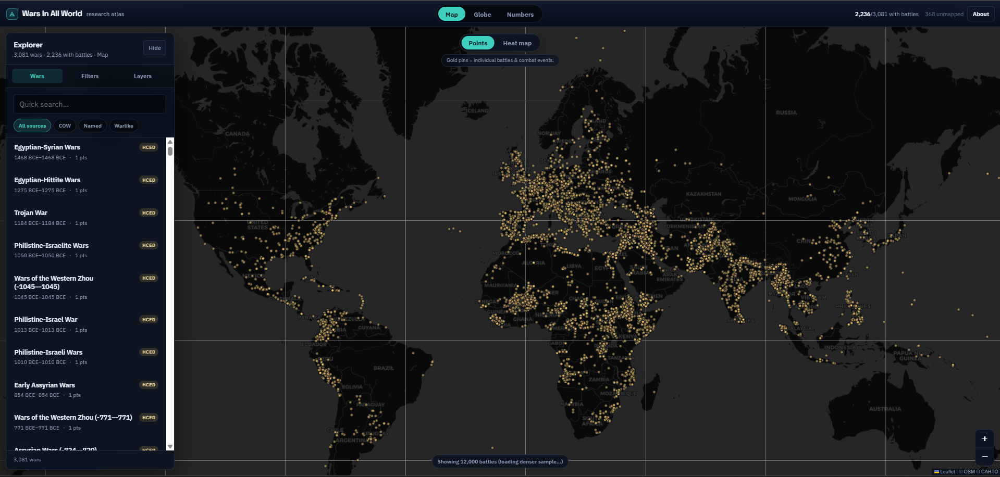
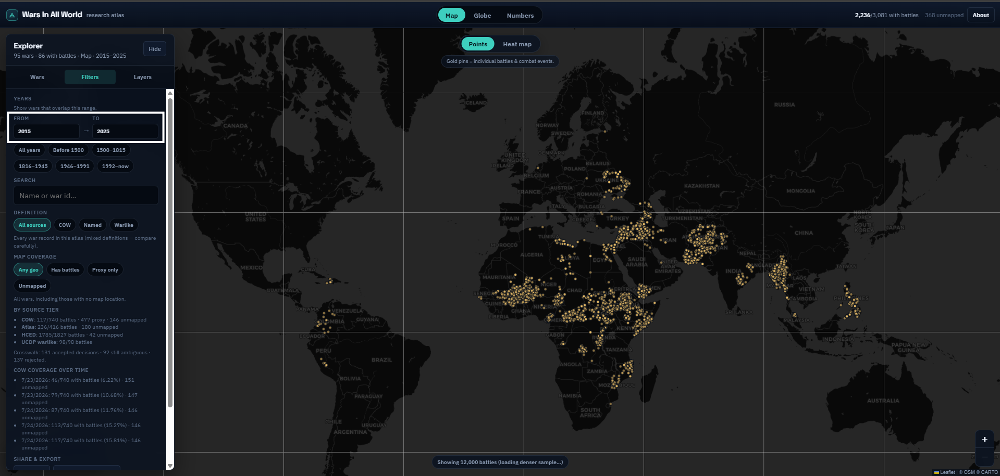
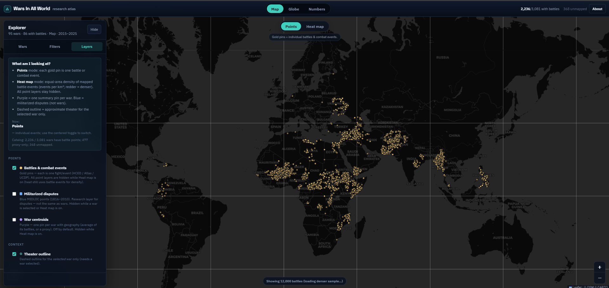
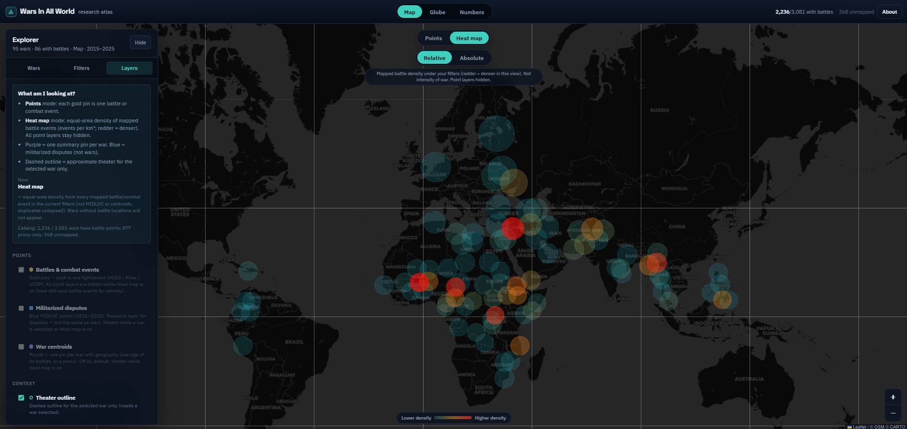
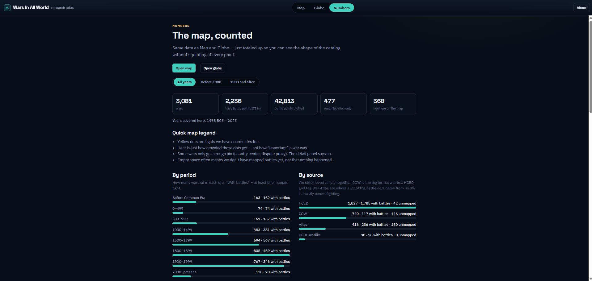
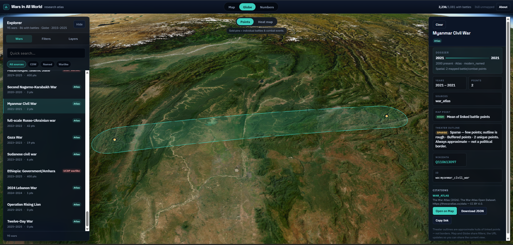

Independent research application · No formal paper yet
Wars In All World
Interactive research atlas of recorded wars — Map, Globe, and Numbers views over geocoded conflict datasets, with transparent coverage and filtering.
3,081Wars in catalog
42k+Battle points plotted
3Views: Map · Globe · Numbers
Overview
What this project does
A browser over geocoded records ingested from public conflict datasets — not a claim that any region “had the most war,” and not a complete history of all wars. Timeline filters, battle and theater geography on Map and Globe, and a Numbers page that shows how counting and era windows change the story.
Methods
Data and coverage honesty
- ETL merges wars, attaches battles/events, derives approximate theaters, and writes GeoJSON/JSON packs for the SPA.
- Crosswalk review for ambiguous dataset matches; progress/QA snapshots in the pipeline.
- Coverage tiers: battles vs proxy centroids vs unmapped — missing battle geography usually means no battle layer in the sources.
- In-app citations for underlying datasets; About panel for educational context.
Application
What you can explore
- /map — Leaflet points, theaters, equal-area heat modes
- /globe — 3D Cesium view with shared explorer state
- /insights — catalog digest, era chips, open on Map/Globe
- Deep links for war selection, era handoff, and optional lat/lng focus
Application
Screenshots
Click any image to zoom in.






